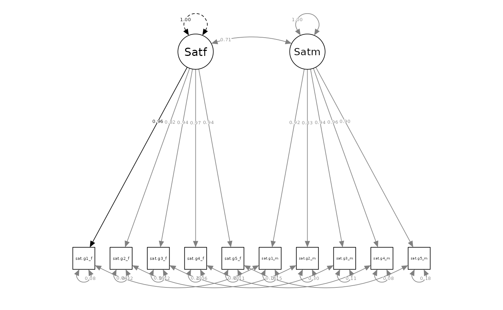

Fitting and Interpretting the Correlated Dyadic Factors Model (CDFM)
Source:vignettes/articles/CDFM.Rmd
CDFM.RmdFair Use of this Tutorial
This tutorial is a supplemental material from the following article:
Sakaluk, J. K., & Camanto, O. J. (2025). Dyadic Data Analysis via Structural Equation Modeling with Latent Variables: A Tutorial with the dySEM package for R.
This article is intended to serve as the primary citation of record
for the dySEM package’s functionality for the techniques described in
this tutorial. If this tutorial has informed your modeling
strategy (including but not limited to your use of dySEM),
please cite this article.
The citation of research software aiding in analyses–like the use of
dySEM–is a required practice, according to the
Journal Article Reporting Standards (JARS) for Quantitative
Research in Psychology (Appelbaum et
al., 2018).
Furthermore, citations remain essential for our development team to
demonstrate the impact of our work to our local institutions and our
funding sources, and with your support, we will be able to continue
justifying our time and efforts spent improving dySEM and
expanding its reach.
Overview
The CDFM is a “uni-construct” dyadic SEM (i.e., used to represent dyadic data about one–and only one–construct, like “relationship satisfaction”).
It contains:
- two latent variables/factors, onto which
- each partner’s observed variables discriminantly load (i.e., one partner’s observed variables onto their factor, and the other partner’s observed variables onto their factor)
It also features two varieties of covariances (or correlations, depending on scale-setting/output standardization):
- one between the two latent variables (effectively, the latent intraclass correlation coefficient), and
- several between the residual variances of the same observed variables across each partner (e.g., between Item 1 for Partner A and Partner B; another between Item 2 for Partner A and Partner B, etc.,).
Owing to it serving as one half of the measurement model of a latent-APIM–and the APIM being the clear default structural model in relationship science (Kenny, 2018)–the CDFM could (taciltly) be considered relationship science’s “default”–for better and for worse–uni-construct dyadic SEM.
Packages, Data, and dySEM Overview
This exemplar makes use of the tidverse meta-package,
and the gt, dySEM, and lavaan
(Rosseel, 2012) packages.
library(dplyr) #for data management
library(gt) #for reproducible tabling
library(dySEM) #for dyadic SEM scripting and outputting
library(lavaan) #for fitting dyadic SEMsFor the exemplar, we will use the built-in commitmentM
dataset from dySEM, which includes ratings of satisfaction
and committment from 282 mixed-sex dyads. These data were collected
using the “global” version of items for relationship satisfaction from
the Rusbult et al. (1998) Investment Model Scale. More
information about this data set can be found in Sakaluk et al. (2021).
This dataset already possesses many of the desirable features of a dataset for use with dySEM, as it is in wide format, and the variable names have a repetitive predictable structure (to learn more, see our tutorial on variable name structure). Specificially:
The satisfaction items follow a “sip” pattern (Stem, Item, Partner) with a stem of “sat.g”, followed immediately by a number for the item (i.e., no delimeter between these elements), followed by a delimiting “_”, and then either the character “f” or “m to indicate to which partner the item refers. For example, the first satisfaction item for partner 1 is”sat.g1_f”, and the first satisfaction item for partner 2 is “sat.g1_m”.
Likewise, the commitment items follow a similar “sip” pattern, albeit with a different stem, “com”.
For this exemplar of dyadic invariance testing, we will focus on the
satisfaction items, and assign them into a stand-alone demonstration
data frame called my_dat:
my_dat <- commitmentM
#show satisfaction item previews
my_dat |>
select(starts_with("sat.g")) |>
as_tibble()
#> # A tibble: 282 × 10
#> sat.g1_f sat.g2_f sat.g3_f sat.g4_f sat.g5_f sat.g1_m sat.g2_m sat.g3_m
#> <int> <int> <int> <int> <int> <int> <int> <int>
#> 1 2 1 1 2 1 1 1 1
#> 2 9 9 9 9 9 9 9 9
#> 3 6 5 7 5 7 5 5 4
#> 4 9 5 9 9 9 2 5 4
#> 5 1 7 1 2 2 2 5 1
#> 6 8 8 8 8 8 9 9 9
#> 7 9 9 9 9 9 9 9 9
#> 8 1 1 1 1 1 1 1 1
#> 9 6 5 4 6 6 9 2 7
#> 10 9 9 9 9 9 9 9 9
#> # ℹ 272 more rows
#> # ℹ 2 more variables: sat.g4_m <int>, sat.g5_m <int>As described in the paper, and the Get Started
tutorial for dySEM , the steps we must take to carry
out dyadic invariance testing with dySEM are:
- Scrape the relevant items from the data set, to be included in each CDFM
- Script the lavaan syntax for the dyadic configural, loading, interecept, and residual invariance models
- Fit the invariance models with lavaan
- generate reproducible output of our analyses, and
- consider the use of optional functionality for supplementary indexes and tests that dySEM can compute (we will demonstrate a couple)
1. Scrape the Variables
The scrapeVarCross
from dySEM is the appropriate function to scrape the variable
information needed for automating the scripting of latent dyadic models
of cross-sectional data. In this instance, we are only scraping
information about indicators about one (pair of) dyadic latent
variable(s): men and women’s latent relationship satisfaction.
As described before, the satisfaction items follow a “sip” pattern (Stem, Item, Partner) with a stem of “sat.g”, followed immediately by a number for the item (i.e., no delimeter between these elements), followed by a delimiting “_“, and then either the character”f” or “m to indicate to which partner the item refers.
We therefore refer to our data frame (“my_dat”) for the
dat argument, and the pattern, stem, delimeters (if any),
and distinguishing characters for the x_order,
x_stem, x_delim1, x_delim2,
distinguish_1, and distinguish_2 arguments,
respectively. In this instance, our stem is “sat.g”; there is no first
delimeter, and an “_” for the second delimeter; and the distinguishing
characters are “f” and “m”.
We assign the output of this function (a list of variable names an information) to an object we are (arbitrarily) calling “sat_dvn”; we often refer to this list as a “dyad variable names” list, or “dvn” for short.
sat_dvn <- scrapeVarCross(dat = my_dat, x_order = "sip", x_stem = "sat.g", x_delim1 = "", x_delim2="_", distinguish_1="f", distinguish_2="m")
sat_dvn
#> $p1xvarnames
#> [1] "sat.g1_f" "sat.g2_f" "sat.g3_f" "sat.g4_f" "sat.g5_f"
#>
#> $p2xvarnames
#> [1] "sat.g1_m" "sat.g2_m" "sat.g3_m" "sat.g4_m" "sat.g5_m"
#>
#> $xindper
#> [1] 5
#>
#> $dist1
#> [1] "f"
#>
#> $dist2
#> [1] "m"
#>
#> $indnum
#> [1] 10As can be seen, the information contained in the dvn is rather mundane: the indicator names for the “f” partners (e.g., “sat.g1_f”), the indicator names for the “m” partners (e.g., “sat.g5_m”), the number of indicators per partner (in this case, 5), the distinguishing characters (“f” and “m”), and the total number of indicators (10) in the entire set. Yet this information is all that is needed for dySEM to dramatically simplify the process of scripting dyadic SEM models, including dyadic invariance models.
2. Script the Model(s)
Next, we will script the dyadic configural, loading, intercept, and
residual invariance models. We will use the scriptCor
function from dySEM to do this. This function requires the
dvn object we created in the prior step, an arbitrary name
for the latent variable for lavaan, and the constr_dy_meas
and constr_dy_struct arguments to indicate which
measurement (i.e., “meas”) and structural (i.e., “struct”) parameters we
want to constraint (i.e., “constr”) across dyad members (i.e., “dy”).
The scaleset argument automatically defaults to the
fixed-factor scale-setting and identification method, prefered for
invariance testing . However, we encourage users who are just beginning
to include this argument explicitly, so they (and others) can readily
determine their model specification approach.
Below, we script the sequence of four models to be fit and compared;
we forego the use of the writeTo and fileName
arguments, which are used to save the .txt of scripts to a file.
Finally, we use an intuitive naming structure to keep track of which
model script resides in which R object.
sat.config.script <- scriptCor(sat_dvn, lvname = "Sat", scaleset = "FF", constr_dy_meas = "none", constr_dy_struct = "none")
sat.load.script <- scriptCor(sat_dvn, lvname = "Sat", scaleset = "FF", constr_dy_meas = c("loadings"), constr_dy_struct = "none")
sat.int.script <- scriptCor(sat_dvn, lvname = "Sat", scaleset = "FF", constr_dy_meas = c("loadings", "intercepts"), constr_dy_struct = "none")
sat.resid.script <- scriptCor(sat_dvn, lvname = "Sat", scaleset = "FF", constr_dy_meas = c("loadings", "intercepts", "residuals"), constr_dy_struct = "none")In their stored form, these scripts are not particularly readable, but as we shall soon see, they are immediately passable to lavaan:
sat.resid.script
#> [1] "#Measurement Model\n\n#Loadings\nSatf=~NA*sat.g1_f+lx1*sat.g1_f+lx2*sat.g2_f+lx3*sat.g3_f+lx4*sat.g4_f+lx5*sat.g5_f\nSatm=~NA*sat.g1_m+lx1*sat.g1_m+lx2*sat.g2_m+lx3*sat.g3_m+lx4*sat.g4_m+lx5*sat.g5_m\n\n#Intercepts\nsat.g1_f ~ tx1*1\nsat.g2_f ~ tx2*1\nsat.g3_f ~ tx3*1\nsat.g4_f ~ tx4*1\nsat.g5_f ~ tx5*1\n\nsat.g1_m ~ tx1*1\nsat.g2_m ~ tx2*1\nsat.g3_m ~ tx3*1\nsat.g4_m ~ tx4*1\nsat.g5_m ~ tx5*1\n\n#Residual Variances\nsat.g1_f ~~ thx1*sat.g1_f\nsat.g2_f ~~ thx2*sat.g2_f\nsat.g3_f ~~ thx3*sat.g3_f\nsat.g4_f ~~ thx4*sat.g4_f\nsat.g5_f ~~ thx5*sat.g5_f\n\nsat.g1_m ~~ thx1*sat.g1_m\nsat.g2_m ~~ thx2*sat.g2_m\nsat.g3_m ~~ thx3*sat.g3_m\nsat.g4_m ~~ thx4*sat.g4_m\nsat.g5_m ~~ thx5*sat.g5_m\n\n#Residual Covariances\nsat.g1_f ~~ sat.g1_m\nsat.g2_f ~~ sat.g2_m\nsat.g3_f ~~ sat.g3_m\nsat.g4_f ~~ sat.g4_m\nsat.g5_f ~~ sat.g5_m\n\n#Structural Model\n\n#Latent (Co)Variances\nSatf ~~ 1*Satf\nSatm ~~ NA*Satm\nSatf ~~ Satm\n\n#Latent Means\nSatf ~ 0*1\nSatm ~ NA*1"However, when exported (via the writeTo and
fileName arguments) or concatenated, they can be presented
in a much more readable format that mirrors what users expect from a
manually written lavaan script:
cat(sat.resid.script)
#> #Measurement Model
#>
#> #Loadings
#> Satf=~NA*sat.g1_f+lx1*sat.g1_f+lx2*sat.g2_f+lx3*sat.g3_f+lx4*sat.g4_f+lx5*sat.g5_f
#> Satm=~NA*sat.g1_m+lx1*sat.g1_m+lx2*sat.g2_m+lx3*sat.g3_m+lx4*sat.g4_m+lx5*sat.g5_m
#>
#> #Intercepts
#> sat.g1_f ~ tx1*1
#> sat.g2_f ~ tx2*1
#> sat.g3_f ~ tx3*1
#> sat.g4_f ~ tx4*1
#> sat.g5_f ~ tx5*1
#>
#> sat.g1_m ~ tx1*1
#> sat.g2_m ~ tx2*1
#> sat.g3_m ~ tx3*1
#> sat.g4_m ~ tx4*1
#> sat.g5_m ~ tx5*1
#>
#> #Residual Variances
#> sat.g1_f ~~ thx1*sat.g1_f
#> sat.g2_f ~~ thx2*sat.g2_f
#> sat.g3_f ~~ thx3*sat.g3_f
#> sat.g4_f ~~ thx4*sat.g4_f
#> sat.g5_f ~~ thx5*sat.g5_f
#>
#> sat.g1_m ~~ thx1*sat.g1_m
#> sat.g2_m ~~ thx2*sat.g2_m
#> sat.g3_m ~~ thx3*sat.g3_m
#> sat.g4_m ~~ thx4*sat.g4_m
#> sat.g5_m ~~ thx5*sat.g5_m
#>
#> #Residual Covariances
#> sat.g1_f ~~ sat.g1_m
#> sat.g2_f ~~ sat.g2_m
#> sat.g3_f ~~ sat.g3_m
#> sat.g4_f ~~ sat.g4_m
#> sat.g5_f ~~ sat.g5_m
#>
#> #Structural Model
#>
#> #Latent (Co)Variances
#> Satf ~~ 1*Satf
#> Satm ~~ NA*Satm
#> Satf ~~ Satm
#>
#> #Latent Means
#> Satf ~ 0*1
#> Satm ~ NA*13. Fit the Model(s)
All of these models can now be fit with whichever lavaan wrapper the user prefers, and with their chosen analytic options (e.g., estimator, missing data treatment, etc)
4. Output and Interpret the Model(s)
Users could then inspect these models and compare these models using their preferred strategy(ies), such as likelihood ratio test, and/or changes in certain fit measures and/or information criteria. Given the analytic researcher degrees of freedom and traditions of preference herein, we leave it to researchers to apply (and preferably also preregister) their preferred approach.
For example, researchers could use the built in anova() function as below:
anova(sat.config.mod, sat.load.mod, sat.int.mod, sat.resid.mod)
#>
#> Chi-Squared Difference Test
#>
#> Df AIC BIC Chisq Chisq diff RMSEA Df diff Pr(>Chisq)
#> sat.config.mod 29 8205.7 8336.0 57.490
#> sat.load.mod 33 8204.1 8320.0 63.944 6.454 0.047147 4 0.1677
#> sat.int.mod 37 8199.2 8300.6 67.018 3.074 0.000000 4 0.5455
#> sat.resid.mod 42 8232.0 8315.3 109.846 42.828 0.165565 5 4.004e-08
#>
#> sat.config.mod
#> sat.load.mod
#> sat.int.mod
#> sat.resid.mod ***
#> ---
#> Signif. codes: 0 '***' 0.001 '**' 0.01 '*' 0.05 '.' 0.1 ' ' 1Conversely, they could instead consider the use of
outputInvarCompTab(), a function we have written to wrap
some of the same comparative output in a more
reproducible-reporting-friendly format:
mods <- list(sat.config.mod, sat.load.mod, sat.int.mod, sat.resid.mod)
outputInvarCompTab(mods)
#> # A tibble: 4 × 15
#> mod chisq df pvalue aic bic rmsea cfi chisq_diff df_diff p_diff
#> <chr> <dbl> <dbl> <dbl> <dbl> <dbl> <dbl> <dbl> <dbl> <dbl> <dbl>
#> 1 configur… 57.5 29 0.001 8206. 8336. 0.06 0.993 NA NA NA
#> 2 loading 63.9 33 0.001 8204. 8320. 0.058 0.992 6.45 4 0.168
#> 3 intercept 67.0 37 0.002 8199. 8301. 0.054 0.992 3.07 4 0.545
#> 4 residual 110. 42 0 8232. 8315. 0.077 0.983 42.8 5 0
#> # ℹ 4 more variables: aic_diff <dbl>, bic_diff <dbl>, rmsea_diff <dbl>,
#> # cfi_diff <dbl>Without additional arguemntation, outputInvarCompTab()
(and other outputters in dySEM) return data frames; these
are the most flexible output types to supply to other tabling and/or
visualization functionality. However, users looking for a more expedient
way to “clean up” reporting from outputters can either make use of the
gtTab argument; TRUE will return a basic gt table which can
then be further modified using additional gt layers. This
is a good option for reproducible reporting document formats (like .Rmd
and .Qmd):
outputInvarCompTab(mods, gtTab = TRUE)| mod | chisq | df | pvalue | aic | bic | rmsea | cfi | chisq_diff | df_diff | p_diff | aic_diff | bic_diff | rmsea_diff | cfi_diff |
|---|---|---|---|---|---|---|---|---|---|---|---|---|---|---|
| configural | 57.490 | 29 | 0.001 | 8205.656 | 8335.991 | 0.060 | 0.993 | NA | NA | NA | NA | NA | NA | NA |
| loading | 63.944 | 33 | 0.001 | 8204.110 | 8319.963 | 0.058 | 0.992 | 6.454 | 4 | 0.168 | -1.546 | -16.028 | -0.001 | -0.001 |
| intercept | 67.018 | 37 | 0.002 | 8199.185 | 8300.556 | 0.054 | 0.992 | 3.074 | 4 | 0.545 | -4.926 | -19.407 | -0.004 | 0.000 |
| residual | 109.846 | 42 | 0.000 | 8232.013 | 8315.282 | 0.077 | 0.983 | 42.828 | 5 | 0.000 | 32.828 | 14.726 | 0.022 | -0.010 |
Conversely, if users prefer to export the output to a file, they can
set the additional writeTo argument to a directory path (a
path of “.” will write to the user’s current working directory, like
that associated with an .Rproj file), and the fileName
argument to a desired base name for the output file. This will save the
output as an .rtf file in that directory, which can then be opened in
Microsoft Word or other word processing software:
outputInvarCompTab(mods, gtTab = TRUE, writeTo = ".", fileName = "sat_invar_comp")Were one strictly to follow only the likelihood ratio test statistic as a guide, they might feel comfortable claiming they have reasonable support for most forms of dyadic invariance, with the exception of significant residual noninvariances, (5) = 42.83, p = 0.
Users can then request that dySEM provide them with
reproducible output via either the outputParamTab() (for
tabular output) or the outputParamFig() (for a path
diagram, back-ended by semPlot). For example, if one wanted a
table of measurement model output from the dyadic intercept invariance
model they could use:
outputParamTab(sat_dvn, model = "cfa", fit = sat.int.mod,
tabletype = "measurement") |>
gt()| Latent Factor | Indicator | Loading | SE | Z | p-value | Std. Loading | Intercept |
|---|---|---|---|---|---|---|---|
| Satf | sat.g1_f | 1.946 | 0.088 | 22.057 | < .001 | 0.960 | 7.456 |
| Satf | sat.g2_f | 1.746 | 0.093 | 18.691 | < .001 | 0.824 | 7.194 |
| Satf | sat.g3_f | 2.090 | 0.097 | 21.644 | < .001 | 0.941 | 7.031 |
| Satf | sat.g4_f | 1.994 | 0.089 | 22.384 | < .001 | 0.967 | 7.469 |
| Satf | sat.g5_f | 2.068 | 0.096 | 21.491 | < .001 | 0.942 | 7.216 |
| Satm | sat.g1_m | 1.946 | 0.088 | 22.057 | < .001 | 0.920 | 7.456 |
| Satm | sat.g2_m | 1.746 | 0.093 | 18.691 | < .001 | 0.834 | 7.194 |
| Satm | sat.g3_m | 2.090 | 0.097 | 21.644 | < .001 | 0.941 | 7.031 |
| Satm | sat.g4_m | 1.994 | 0.089 | 22.384 | < .001 | 0.961 | 7.469 |
| Satm | sat.g5_m | 2.068 | 0.096 | 21.491 | < .001 | 0.903 | 7.216 |
The model and tabletype arguments are the
main providers of optionality to be aware of, as outputParamTab is also
used to provide tabular output from other model types (e.g., APIMs), and
users may be most interested in the output from one portion of the model
(e.g., the measurement model) versus another (e.g., the structural
model).
Path diagrams, meanwhile, are created with the
outputParamFig() function, which is used in a similar
manner to outputParamTab() (and includes the same
writeTo and fileName arguments if you wish to
export a .png). Otherwise, the primary argument to be aware of is
figtype, which allows users to specify what kind of
parameter estimates they wish to be depicted in the path diagram.
outputParamFig(fit = sat.int.mod, figtype = "standardized")
Thus, in little more than a dozen lines of code, researchers can script, fit, compare, and output a series of dyadic invariance comparisons using the Correlated Dyadic Factors Model. From this, researchers would learn that the satisfaction measure demonstrates reasonable configural, loading, and intercept invariance between partners, and that the latent ICC between partner’s satisfaction levels is 0.71, z = 16.15, p <.001 (95% CI: 0.62, 0.8).
5. Consider Optional Indexes and Output
A remaining question would be: if our chosen model fails to
demonstrate residual invariance, which indicator(s) are responsible for
introducing the noninvariance? The outputConstraintTab()
function from dySEM, while not strictly necessary, offers supplemental
functionality to help answer this question.
Users simply enter the lavaan model responsible for the statistically significant degradation of model fit, and are provided with a table of each dyadic invariance constraint, by indicator, and its Langrange multiplier test statistic and corresponding test:
outputConstraintTab(sat.resid.mod) |>
gt()| param1 | constraint | param2 | chi2 | df | pvalue | sig |
|---|---|---|---|---|---|---|
| Satf =~ sat.g1_f | == | Satm =~ sat.g1_m | 1.131 | 1 | 0.288 | NA |
| Satf =~ sat.g2_f | == | Satm =~ sat.g2_m | 0.633 | 1 | 0.426 | NA |
| Satf =~ sat.g3_f | == | Satm =~ sat.g3_m | 0.060 | 1 | 0.806 | NA |
| Satf =~ sat.g4_f | == | Satm =~ sat.g4_m | 1.839 | 1 | 0.175 | NA |
| Satf =~ sat.g5_f | == | Satm =~ sat.g5_m | 3.603 | 1 | 0.058 | NA |
| sat.g1_f ~1 | == | sat.g1_m ~1 | 0.057 | 1 | 0.812 | NA |
| sat.g2_f ~1 | == | sat.g2_m ~1 | 1.316 | 1 | 0.251 | NA |
| sat.g3_f ~1 | == | sat.g3_m ~1 | 0.048 | 1 | 0.827 | NA |
| sat.g4_f ~1 | == | sat.g4_m ~1 | 0.103 | 1 | 0.748 | NA |
| sat.g5_f ~1 | == | sat.g5_m ~1 | 2.090 | 1 | 0.148 | NA |
| sat.g1_f ~~ sat.g1_f | == | sat.g1_m ~~ sat.g1_m | 22.977 | 1 | 0.000 | *** |
| sat.g2_f ~~ sat.g2_f | == | sat.g2_m ~~ sat.g2_m | 0.263 | 1 | 0.608 | NA |
| sat.g3_f ~~ sat.g3_f | == | sat.g3_m ~~ sat.g3_m | 0.317 | 1 | 0.573 | NA |
| sat.g4_f ~~ sat.g4_f | == | sat.g4_m ~~ sat.g4_m | 2.422 | 1 | 0.120 | NA |
| sat.g5_f ~~ sat.g5_f | == | sat.g5_m ~~ sat.g5_m | 17.185 | 1 | 0.000 | *** |
In this particular instance, significant noninvariance was only introduced by forcing the constraint on the residual variances for the 1st and 5th items